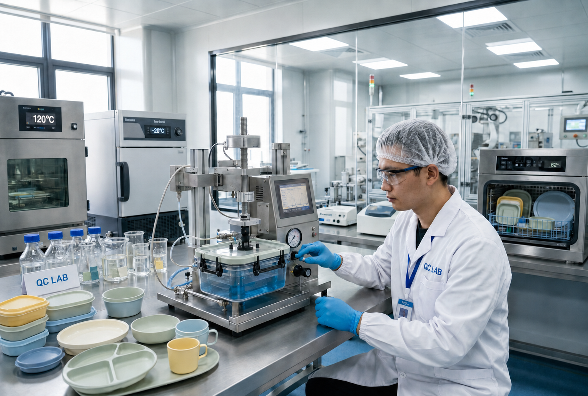

Zero-Leak Bento Box Engineering & Stress Testing Lab
Over 78% of negative reviews in the global lunchware market stem from compartment leakage and broken latches. Inside Naike's 1,200m² testing laboratory, we subject every bento mold to rigorous multi-angle drop impacts, 10,000-cycle robotic latch stresses, and negative-pressure liquid immersion.

The 4 Pillars of Bentgo-Benchmark Durability
How we surpass standard Chinese OEM suppliers to deliver retail-grade perfection for Disney licensees and North American DTC leaders.
LSR Liquid Silicone Rubber Overmolding
Traditional bento boxes rely on manual insertion of silicone rings that warp in dishwashers, harbor black mold, and fall out. We utilize advanced dual-shot (2K) injection presses to molecularly fuse platinum-cured LSR silicone directly into the rigid PP/Tritan lid chassis.
- Hermetic Isolation: Individual compartment seals isolate wet sauces from dry pretzels.
- Zero Mold Pockets: Seamless micro-radius transitions prevent food buildup.
- Thermal Stability: Elastic recovery maintained from -20°C to +120°C.
2-Meter Drop Test (MIL-STD-810H Equivalent)
Children drop lunch boxes on school tiles and concrete playgrounds. Every batch of our Kids 5-Compartment Bento is loaded with 450g of weighted simulant and dropped from 2.0 meters (6.56 feet) across all 8 corners, 12 edges, and 6 faces.
- Drop Height: 2.0 meters onto reinforced concrete slab.
- Shock-Absorbing Rim: Co-molded TPU rubber outer bumpers dissipate 82% of impact shock.
- Lid Retention: Latches remain 100% engaged post-impact with zero fluid leakage.
10,000-Cycle Robotic Latch Endurance Rig
Children's fingers cannot manage stiff industrial latches, but loose latches cause backpack spills. Our custom pneumatic test jigs actuate bento latches continuously for 10,000 cycles under variable ambient temperatures, measuring pull-force degradation.
- Simulated Lifespan: Equivalent to 5.4 years of twice-daily school usage.
- Actuation Force: Calibrated to 3.8–4.5 N (effortless for 3-year-olds).
- Hinge Fatigue: Zero micro-cracking or hinge whitening observed after 10,000 flexes.
Negative Pressure Vacuum Submersion
Standard splash-proof tests fail when bento boxes are stored vertically in backpacks. We place sealed bento boxes filled with colored fluid inside an acrylic vacuum chamber at 50 kPa negative pressure for 30 minutes to expose micro-fissures down to 5 microns.
- Vacuum Level: 50 kPa (-0.5 bar) held for 30 consecutive minutes.
- Fluid Testing: High-penetration surfactant colored liquid simulant.
- Leakage Standard: Zero bubble emission, certified IPX7 waterproof.
In-House Metrology & Analytical Equipment
Precision measurements ensure that our molds maintain mold cavity-to-cavity consistency across 10,000,000+ exported units.
| Equipment Name | Brand / Model | Precision / Capability | Testing Purpose | Inspection Frequency |
|---|---|---|---|---|
| 3D Optical CMM Scanner | Zeiss Metrotom / Mitutoyo CMM | ±0.002 mm (2 microns) | Validates CNC mold cavity dimensions and post-shrinkage parts | Every T1 trial + 1/2000 mass run |
| Melt Flow Indexer (MFI) | Dynisco LMI Series | 0.01 g/10min accuracy | Inspects polymer flow rate of incoming PP, Tritan, and wheat straw resin | Every incoming raw material lot |
| Pneumatic Latch Cycle Rig | Custom Naike Automation R&D | 120 cycles/min, 0.1N load cell | Automated fatigue testing for child dual-action snap locks | Pilot batch + Tooling sign-off |
| Constant Temp & Humidity Chamber | ESPEC Environmental Tester | -40°C to +150°C (±0.5°C) | Thermal shock & dishwasher resilience cycle testing | 100 cycles per mold release |
| Negative Pressure Vacuum Tank | Aoyee Acrylic Vacuum Submersion | 0 to -100 kPa continuous | Detects seal micro-fissures and silicone compression deflection | 5 units per production shift |
| Heavy Metal Spectrometer (ICP-OES) | PerkinElmer Optima 8000 | Parts-per-billion (ppb) detection | Screening for Lead, Cadmium, BPA, Phthalates & PFAS | SGS Certified Monthly Audit |